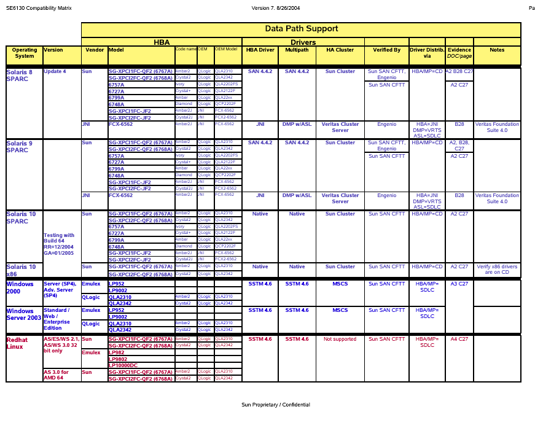

Reviewed by Jeff Fall
C H A P T E R
7
Installing the Host Software
This chapter describes how to install data host software on various supported host
platforms. It contains the following topics:
Preparing for Installation
Installing the Remote Management Software
Installing Host Software for Solaris Hosts
Downloading the Software
Installing the Host Software for Windows Hosts
Installing Host Software for Red Hat Linux, HP-UX, and AIX Hosts
Installing Host Software for SGI Hosts
Installing Host Software for NetWare Hosts
Preparing for Installation
Before installing the data host software, verify the following for each data host:
Operating system and version is supported as described in the release notes
Host Bus Adapter is installed and supported as described in the release notes
HBA firmware is at the required level as described in the release notes <<can the
firmware be downloaded from Sunsolve download center?>>
This does not appear to be easy to find on Sunsolve
http://sunsolve6.sun.com/search/advsearch.do
It would be great if we could upgrade the HPA cards
while installing the rest of the required software on the datahost.
Data hosts are cabled to the array as described in "Connecting Data Hosts" on
page 40
61
Installing the Remote Management
Software
The Sun StorEdge 6130 remote management software provides a command line
interface (CLI) for configuring the array from a host other than the external
management host.
The CLI is available for Solaris, Windows, Red Hat Linux, HP-
UX, and AIX operating environments. (For a list of supported operating system
versions see the Sun StorEdge 6130 Array Release Notes.)
<<Note to reviewers: Please review this matrix for accuracy and provide info where
you see ???. This table will be moved to the Release Notes at RR, so that only the RN
will need to be updated when additional OSs (such as Solaris 10) are qualified. >>
Table 7-1 lists the data host platforms, patches, and drivers supported with this
release of the software.
TABLE 7-1
Supported Data Host Platforms
Operating System
Minimum OS Patch
HBA Driver
Multipath Driver
HA Cluster
Windows 2000 Server
Service Pack SP4
Emulex
Sun StorEdge Traffic
MSCS 1.0
and Advanced Server
QLogic
Manager
Windows Server 2003
Service Pack SP4
Standard, Web, and
Enterprise Editions
Red Hat Linux
Sun 7.00.2
Sun StorEdge Traffic
N/S
AS/ES/WS 2.1 and
Manager
AS/WS 3.0 (32-bit)
HP-UX 11.0, 11.11
Patch set
HP Native
HP LVM
MC/Service
September 2003
Guard
IBM AIX ???
???
???
Solaris 8, Update 4
SAN
Sun StorEdge Traffic
Sun Cluster
Foundation
Manager
Software 4.5
JNI
DMP Array Support
VERITAS Cluster
Library (ASL) *
Solaris 9
SAN
Sun StorEdge Traffic
Sun Cluster
Foundation
Manager
Software 4.5
JNI
DMP Array Support
VERITAS Cluster
Library (ASL)
62
Sun StorEdge 6130 Array Getting Started Guide · August 2004 (Beta Draft)
TABLE 7-1
Supported Data Host Platforms
Operating System
Minimum OS Patch
HBA Driver
Multipath Driver
HA Cluster
Novell NetWare 6
SP4
??
QLogic F/O
Novell Cluster
Services NW6.5 -
Novell NetWare 6.5
SP1.1
NCS v1.7, NW6.0 -
NCS 1.6
SGI IRIX 6.5.22
??
??
??
We have a compatibility matrix to cover these
on our website:
http://nws-treefrog/sophomore/phase2/sophomore-compatibility-v7.pdf
username is treefrog
password is arboreal
Here is a snap of it on 8.31.04

* Available for download from http://www.sun.com./software/download/allproducts.html
Installing Host Software for Solaris
Hosts
The data host software for Solaris is distributed on the Sun StorEdge 6130 Array
Host CD.
Before You Begin
Check to be sure that the data host is running a supported version of the Solaris
operating system, all required patches are applied, and the supported HBA
firmware level is installed. Refer to the Sun StorEdge 6130 Array Release Notes for a
list of supported operating systems, patches, and HBAs.
The install script installs the following packages:
Sun SAN Foundation software
Remote Management Software (Remote CLI client) for Solaris
Sun Storage Automated Diagnostic Environment software (STORade)
>>>>>>Sun StorEdge 6130 Configuration Service
<<<<<<<<<<<(Please
add this one)
Solaris Host multipathing software Sun StorEdge Traffic Manager (SSTM)
Starting the Installation
To start the installation script:
1. Log in to Solaris as root.
2. Insert the host installation CD into a local drive.
Chapter 7
Installing the Host Software
63
3. Change to the cdrom directory:
cd cdrom
This script is out of date. Please get the
BUILD 9 script.
Information is at:
http://webhome/SIG
Sophomore.
username treefrog
password arboreal
4. Start the installation script by typing:
./install
The following is displayed:
Host Software Installation
--------------------------
This script installs software for your Sun StorEdge(tm) 6130 storage system.
Software components included in this distribution:
- Sun StorEdge[tm] Data Host Software
- Sun StorEdge[tm] Management Host Software
- Sun StorEdge[tm] Remote Management Host Software
Do you want to continue? [y/n] : y
5. Enter y to continue the installation.
You are then prompted to select which software package you want to install.
6. To install the data host software, enter y as shown in the following example:
Do you want to install ....
Sun StorEdge[tm] Data Host Software [y/n] : y
7. Enter y to confirm the software you selected.
You have chosen to install the following components:
Sun StorEdge[tm] Data Host Software
Is this correct? [y/n] : y
The installation of the data host software takes approximately <TBS> minutes to
complete.
During the installation, you will be prompted to press Return to continue the
installation of each package. You will also be asked to accept the terms of the Storage
Automated Diagnostic Environment license agreement.
64
Sun StorEdge 6130 Array Getting Started Guide · August 2004 (Beta Draft)
The following is an example of the messages and pathnames of the files that will be
displayed during the installation:
<TBS>
Enabling Sun StorEdge Traffic Manager Software
To enable Sun StorEdge SAN Foundation and Sun StorEdge Traffic Manager
software (MPxIO/STMS) on the host:
1. Open the /kernel/drv/scsi_vhci.conf file with a text editor.
2. Set mpxio-disable=no in the file.
3. Reboot the host.
Downloading the Software
The remote CLI client for non-Solaris hosts is distributed from Sun's Download
Center.
To download the software, follow these steps:
1. From the host where you want to install the software, open a browser window and
go to Sun's Download Center at:
http://wwws.sun.com/software/download/sys_admin.html#stor
2. Click Sun StorEdge 6130 ARRAY. <NEED ACTUAL LINK TITLE>
3. Click on Sun StorEdge 6000 Family Host Installation Software Download. <NEED
LINK TITLE>
4. Click Download to access the download window for all operating systems.
Chapter 7
Installing the Host Software
65
5. Log in using your customer user name and password.
TABLE 7-2
Remote CLI Client Software for Non-Solaris Operating Systems
Operating System
Software
File
AIX
Sun StorEdge 6000 CLI Package for AIX
aix_README.txt
aix_se6x20.tar
HP-UX
Sun StorEdge 6000 CLI Package for HP-UX
hpux_README.txt,
hpux_se6x20.tar
Red Hat Linux 7.2
Sun StorEdge 6000 CLI Package for Linux
linux_README.txt
inux_se6x20.tar
Windows 2000 server Sun StorEdge 6000 CLI Package for Windows
win_README.txt,
and Advanced Server
win_Disk1.zip
Windows Server 2003
<TBS>
Standard, Web, and
Enterprise Editions
Novell NetWare
<TBS>
SGI IRIX
<TBS>
The README file contains the latest installation instructions for the client.
6. For AIX, HP-UX, and Linux, use these steps:
a. Click the file to download (see TABLE 7-2).
b. The web browser prompts you to download the file. (Download to any
directory except /opt).
c. Save the SE6X30_host_sw.tar.Z package to a temporary working directory after
you download it.
# cp SE6X30_host_sw.tar.Z /directory
d. where /directory is a directory name in which to copy the package.
e. Change to the temporary directory.
# cd /directory
f. Uncompress the SE6X30_host_sw.tar.Z file.
g. Extract the contents by entering:
tar -xvf SE6x30_host_sw.tar
66
Sun StorEdge 6130 Array Getting Started Guide · August 2004 (Beta Draft)
Note Note: If checksum errors occur while using platform-specific tar, use the
GNU version of tar.
7. For Windows 2000 or Windows 2003, use these steps:
a. Unzip Disk1.zip using any zip program that supports Windows.
b. Save the unzipped folder to any directory.
Installing the Host Software for
Windows Hosts
Installing the Remote CLI Client
1. Download the software for the Windows host as described in "Downloading the
Software" on page 65.
2. Double click setup.exe.
3. Read the licensing agreement and answer the licensing question.
If you accept the licensing agreement, the software installs on the host.
4. Open the Command Prompt (From the Start menu, click Programs -> Accessories -
> Command Prompt).
5. Add c:\Program Files\Sun Microsystems\SSCS into your command prompt path.
The Remote CLI client is now installed. You can now enter sscs commands in the
Command Prompt. For information about the commands, see the sscs(1M) man
page.
Chapter 7
Installing the Host Software
67
Installing Host Software for Red Hat
Linux, HP-UX, and AIX Hosts
Installing the Remote CLI Client
1. Download the host software for the appropriate operating system as described in
"Downloading the Software" on page 65.
2. Log in as superuser (root).
If aliases exist in the superuser environment or profile, the software installation and
configuration might have unexpected results. Remove any aliases created for the
environment (for example, cp="cp -i") before you install or configure the
software.
For the Korn shell: # unalias -a
For the C shell:> unalias *
3. Verify that you have write permissions in /opt.
4. Install the package by entering:
./se6x30_install <<What is package name??>>
5. Read the licensing agreement and answer the licensing question.
When you accept the licensing agreement, the software installs in /opt/se6x30 on
the host.
6. Add /opt/se6x30/bin to your path.
7. Enter /opt/se6x30/bin/sscs at the command line.
The Remote CLI client is now installed. For more information about the commands,
see the sscs(1M) man page.
68
Sun StorEdge 6130 Array Getting Started Guide · August 2004 (Beta Draft)
Installing Host Software for SGI Hosts
<TBS>
Installing Host Software for NetWare
Hosts
<TBS>
Chapter 7
Installing the Host Software
69
70
Sun StorEdge 6130 Array Getting Started Guide · August 2004 (Beta Draft)
Document Outline